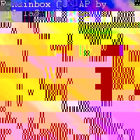
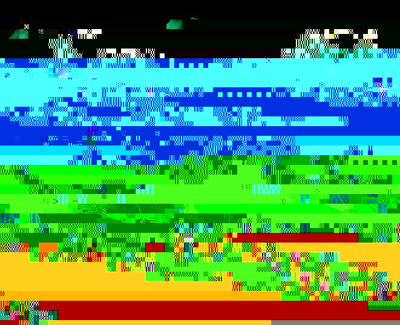

Texture Based Color Maps for High Accuracy Data Visualization
Ian Curington
Advanced Visual Systems, Inc.
ianc@avs.com
Inputs:
Mesh+Node_Data (Scalar)
Texture Image
Outputs:
Mesh+Node_Data (with UV texture coordinates)
GDobject renderable with texture image
Typical Usage:
Read_UCD (yoke.inp)
|
Extract_Scalar
Read_Image (rainbow.jpg)
| |
Scalar2Texture
|
Viewer
Description:
This filter module takes any scalar node data, and replaces it with a mesh with UV texture coordinate node data. The mapping is over the entire range of the input data range, so that look up positions on a texture image source containing color map values may be used. The texture image source is intended as a single dimensional color table source, with values sampled along the primary diagonal. The module duplicates the node data array, creating a new UV array. The new node data is merged into the original mesh to create a derived field. Both the field and the GDobject version with texture are available for use as output ports.
Discussion:
Most visualization systems contain operators to map data values to color. Color map systems are used to specify such mapping, such as blue for a low value, and red for a high value. When applied to data on geometry (meshes), data values are known only at discreet points on the geometry. Using continuous color maps, smooth changes in color are displayed between available data points. The way in which the color is smoothed, or interpolated between the points can have a dramatic effect on the interpretation of the underlying data.
In most systems, the data values are sampled and converted to color values, typically Red-Green-Blue triplets at each node or vertex of the geometry. During display, interpolation is left to the underlying display system, which then interpolates intermediate values by blending the two colors. Serious artifacts can result. In some cases, completely wrong colors may be displayed as a result of color interpolation. If two adjacent data points have the colors Red and Blue, color interpolation will generate Purple at the half-way point. If the values are at extreme ends of the color map, and the color map has Green at the center point of the scale, then Green would be the expected color, not Purple.
A solution to this situation is to use texture mapping. Texture mapping is an advanced graphics technique that has become available on almost all graphics systems through its popular use in games such as Doom, Quake, and Tomb Raider. Texture mapping is also well supported through software interfaces such as OpenGL and Direct3D. Instead of passing pre-sampled colors to the display, parametric texture coordinates are passed, along with a texture image. Interpolation is then performed directly on the texture coordinates, which are used to look up color values from the reference image.
Using a color map structure in the reference image, the same color map information may be passed to the display. Display times may be slower, since more operations are performed, and more data must be processed by the display system, however this is a small price to pay to achieve interpolation accuracy. Interpolation can now show much more detail in the original data, and show subtle variations that are completely lost using the usual color interpolation. Users can specify an order of magnitude higher resolution color maps, and the entire color map can be displayed between two adjacent data points if needed. This technique is especially suitable where small non-linearities of the data must be highlighted, or where the data contains sharp gradients.
The AVS/Express field data structure has high-level attributes that specifiy both scalar node data and texture coordinate data. By use of direct data reference expressions, derived data structures can easily specify the mapping from scalar to texture coordinate space. Since texture images are referenced in a 0 to 1.0 coordinate system, input data arrays are transformed into this data range.
texture coordinate = (data array - min(data array)) / (max(data array) - min(data array))
Since most texture display systems need a square image structure, and colormap is placed down the diagonal of the image. As shown below, a rainbow color pattern is easily sketched using a paint program to create a color map image:

The differences in detail presented in the visualization can easily be seen in the following comparison. In the bottom model, the data is displayed using a standard color hue range from low to high, with blue as the lowest color, and red the highest. In the upper model, the rainbow shown above is used as the texture based color map. The white lines are almost idendical in the two models to show contour levels as reference. Much more data variation detail is shown in the upper model than the lower, using the texture based color map technique. The model is of a 3D finite element analysis of a yoke bracket, with resultant strain values displayed as the part is placed under load.

The scalar2texture module for AVS/Express is implemented in V, as a
filter macro. All mapping is automatic, and there are no parameters which
require a user interface. The classes referenced in the implementation of
the Scalar2Texture module are accessable by all versions of AVS/Express
visualization system. The module is available for download
from the International AVS Centre.
{kind=link}